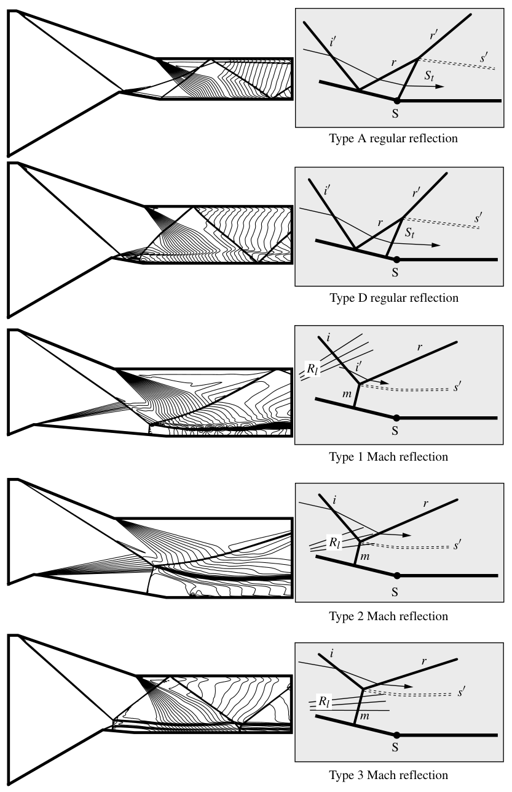
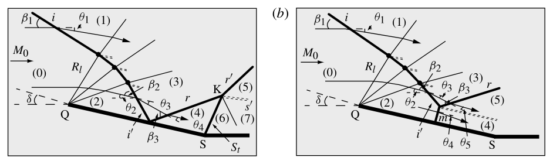
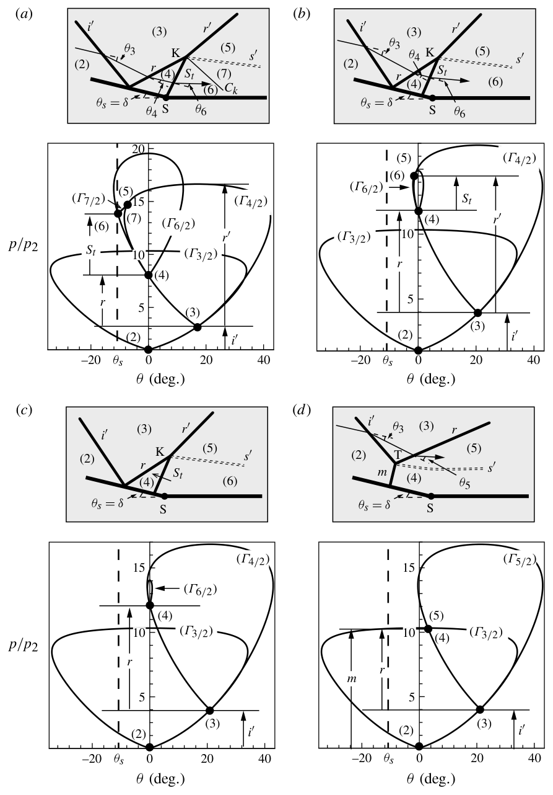
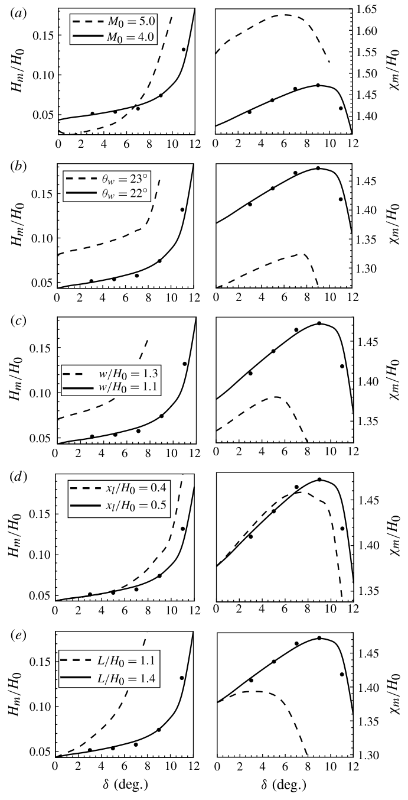

01中文摘要
研究超声速/高超声速进气道非设计工况下的激波反射：入射激波受唇口上游膨胀波扰动，反射激波又与下游整流罩转折产生的偏转激波相交，二者取相同气流偏转角。借助激波干扰理论和数值模拟，分析唇口与整流罩转折角对流场结构以及规则反射/马赫反射临界条件的影响。结果显示，膨胀波与激波的相互干扰显著改变双解域；在马赫反射条件下采用改进模型分析流场，发现马赫杆高度随转折角增大而增大，其水平位置在小转折角时向下游移动、大转折角时向上游移动。
原始摘要（英文/原文）
In this paper, we consider shock reflection problems, occurring in supersonic and hypersonic intake flow under off-design conditions, in which the incident shock wave is disturbed by the lip-generated upstream expansion wave and the reflected shock wave intersects with a downstream cowl-turning deflected shock wave. The expansion wave and deflected shock wave are here generated with the same magnitude of flow deflection angle or turning angle. With the help of shock interaction theory and numerical simulation, the influence of the turning angle of the lip and cowl on the flow structure and the critical conditions for transition between regular reflection and Mach reflection are analysed. It is found that the dual-solution domain is significantly altered by the interference between the expansion wave and shock waves. The flow structure in the condition of Mach reflection is then analysed with a model updated from a previous study. It is shown that the Mach stem height is an increasing function of the turning angle, while the horizontal position of the Mach stem is shifted in the downstream direction for small turning angle and in the upstream direction for large turning angle.
02阅读说明
journalArticle（JFM 2013, 735:61–90），30页；bundle 1558行已全读。正文§1–§4、附录A（数值方法）、附录B（流场模型）、表1–4以及图2–21的图注均覆盖；公式OCR多处乱码，已用PDF第66–67、70、73–74页核对式(2.1)–(2.9)与(2.31)–(2.41)。论文为理论+Euler数值研究，无实验，验证仅与Hillier(2007)数值结果对比；式(2.3)分母常数在OCR中不清，按上下文取2，具体符号体系仍需以PDF为准。 文章类型：期刊
03一句话核心与三句话摘要
进气道非设计工况下唇口膨胀波与整流罩转折激波共同干扰时的激波反射类型、转变判据与马赫杆特性。
- 既有研究多只考虑唇口膨胀波对入射激波的干扰，未同时考虑反射激波与整流罩转折激波相交；真实进气道非设计工况正属于后者。 AI概括
- 用激波极线、三波理论和Euler数值模拟，识别出A/D型规则反射与1–3型马赫反射，给出受上游膨胀波和下游转折激波扰动的RR/MR转变判据，并用更新的Gao–Wu模型预测马赫杆高度与位置。 AI概括
- 双解域随转折角显著改变；大转折角更易发生马赫反射且马赫杆更高，总压损失与流场不均匀性增大，对进气道性能不利。 AI概括
04核心内容清单
| 要点 | 类型 | 重要性 | 原文依据 | 属性 |
|---|---|---|---|---|
| 论文研究真实进气道非设计工况：入射激波进入内流道后，同时受到唇口膨胀扇和整流罩转折激波的作用。 | 研究背景 | A | p.61–64，§1 | 原文明确 |
| 按入射激波i′、反射激波r、整流罩转折激波St与膨胀扇Rl的相对位置，将波系分为A型RR、D型RR、type 1 MR、type 2 MR、type 3 MR五类。 | 波系分类 | A | p.64–66，图4、图5 | 原文明确 |
| A型RR：St附着，i′在转折点前打到壁面，St与r在S点形成λ波、三波点与滑移线s′；D型RR：St脱体并在S上游与cowl相交，分稳定与不稳定两支。 | RR子类 | A | p.64–66 | 原文明确 |
| type 1/2/3 MR的区别在于三波点相对膨胀扇与反射点的位置：在膨胀扇前、在膨胀扇内、膨胀扇只作用于马赫杆。 | MR子类 | A | p.66，图4 | 原文明确 |
| 用激波极线与三波理论建立各区域参数：p3/p0、M3、θ3由Σp、ΣM、Σθ给出，三波点满足θ3−θ5=θ4与p5=p4。 | 理论模型 | A | p.66–70，式(2.15)、(2.26)–(2.30) | 原文明确 |
| 力学平衡判据θwN：p4=p5且θ5=θ3N，对应von Neumann极限；脱离判据θwD(B)：θ4=θ4max；受扰脱离判据θwD(A)：θ4+θ6max=θ5且p5=p6。 | 转变判据 | A | p.71–74，式(2.33)–(2.41)，图9 | 原文明确 |
| θwD(A)略低于θwD(B)，两者均高于θwN，因此存在纯RR、双解（RR/MR均可能）与纯MR三个区间。 | 判据关系 | A | p.74，图9 | 原文明确 |
| δ对判据的影响随M0反转：小M0时δ>0使θwD曲线整体上移，纯RR与双解域扩大、纯MR域收窄；大M0时相反。 | 参数影响 | A | p.74–75，图9 | 原文明确 |
| 最大转折角θw,max与最大来流马赫数M0,max均随δ增大而减小。 | 参数影响 | A | p.75，图10 | 原文明确 |
| 表1的8个算例与判据预测一致；案例h用不同初始条件分别得到RR与MR，证实双解域与迟滞。 | 数值验证 | A | p.76，表1 | 原文明确 |
| Hm/H0总体随δ增大，大δ时近似指数增长，并存在非单调例外；马赫杆位置小δ时向下游、较大δ时向上游移动。 | 马赫杆特性 | A | p.79–81，图15、表2 | 原文明确 |
| 大δ使MR更易发生且Hm更高，导致总压损失增大和流场不均匀，进气道性能恶化。 | 工程含义 | A | p.82，§4 | 原文明确 |
05引言：研究问题与领域缺口
【原文明确】背景：激波反射是超声速/高超声速进气道内流的基本现象，规则反射(RR)与马赫反射(MR)的判据已有von Neumann力学平衡条件与脱离判据，但真实进气道唇口存在膨胀扇、反射面有限长、并带有整流罩(cowl)转折（p.61–62）。缺口：Hillier(2007)系统研究了唇口膨胀波对入射激波的影响并给出type 1–3 MR，但未同时考虑反射激波与整流罩转折激波相交；非设计工况下入射激波进入进气道时正是这种构型（p.62–64）。目标：建立含上游膨胀波与下游整流罩激波的反射波系分类与转变判据，量化转折角δ、马赫数M0、几何长宽比等对反射类型与马赫杆高度Hm的影响（p.62–64）。
06流动条件与几何构型
| 项目 | 数值/描述 | 依据 | 备注 |
|---|---|---|---|
| 流动假设 | 二维、定常、无黏、完全气体；比热比γ为常数（具体取值文中未提及） | p.64，附录A p.82 | |
| 来流马赫数M0 | 2.0（验证）、2.5、3.0、4.0、4.5、5.0 | 表1 p.76；表2 p.79；表3 p.80；图4 p.5 | |
| 几何构型 | 楔面转折角θw；唇口膨胀角δ；整流罩转折角θs=δ；唇口位置xl/H0；进气道宽度w/H0；长度L/H0 | p.63，图3 | |
| 表1案例a | M0=2.5；θw=20°；δ=5°；判据MR；CFD为type 3 MR | 表1 p.76 | |
| 表1案例b | M0=2.5；θw=20°；δ=10°；判据双解；CFD为D型RR | 表1 p.76 | |
| 表1案例c | M0=2.5；θw=19°；δ=5°；判据MR；CFD为type 3 MR | 表1 p.76 | |
| 表1案例d | M0=2.5；θw=19°；δ=10°；判据RR；CFD为D型RR | 表1 p.76 | |
| 表1案例e | M0=2.5；θw=19°；δ=15°；判据RR；CFD为D型RR | 表1 p.76 | |
| 表1案例f | M0=4.0；θw=20.5°；δ=5°；判据RR；CFD为A型RR | 表1 p.76 | |
| 表1案例g | M0=4.0；θw=20.5°；δ=10°；判据双解；CFD为A型RR | 表1 p.76 | |
| 表1案例h | M0=4.0；θw=20.5°；δ=10°；判据双解；CFD为type 1 MR（改变初始条件）；与案例g构成迟滞对照 | 表1 p.76 | |
| 表2公共几何 | w/H0=1.1；L/H0=1.4；xl/H0=0.17或0.5；H0为唇口高度 | 表2 p.79 | |
| 表2工况1 | M0=4.0；θw=22°；δ=5°；xl/H0=0.17；Hm/H0 CFD 0.104，模型0.108 | 表2 p.79 | |
| 表2工况2 | M0=4.5；θw=22°；δ=5°；xl/H0=0.17；Hm/H0 CFD 0.110，模型0.109 | 表2 p.79 | |
| 表2工况3 | M0=5.0；θw=22°；δ=5°；xl/H0=0.17；Hm/H0 CFD 0.114，模型0.116 | 表2 p.79 | |
| 表2工况4 | M0=5.0；θw=23°；δ=5°；xl/H0=0.17；Hm/H0 CFD 0.130，模型0.139 | 表2 p.79 | |
| 表2工况5 | M0=5.0；θw=24°；δ=5°；xl/H0=0.17；Hm/H0 CFD 0.157，模型0.170 | 表2 p.79 | |
| 表2工况6 | M0=4.0；θw=22°；δ=3°；xl/H0=0.5；Hm/H0 CFD 0.0517，模型0.0500 | 表2 p.79 | |
| 表2工况7 | M0=4.0；θw=22°；δ=5°；xl/H0=0.5；Hm/H0 CFD 0.0539，模型0.0550 | 表2 p.79 | |
| 表2工况8 | M0=4.0；θw=22°；δ=7°；xl/H0=0.5；Hm/H0 CFD 0.0582，模型0.0617 | 表2 p.79 | |
| 表2工况9 | M0=4.0；θw=22°；δ=9°；xl/H0=0.5；Hm/H0 CFD 0.0748，模型0.0747 | 表2 p.79 | |
| 表2工况10 | M0=4.0；θw=22°；δ=11°；xl/H0=0.5；Hm/H0 CFD 0.131，模型0.114 | 表2 p.79 | |
| 表3参数研究a | M0=4.0与5.0对比；θw=22°；w/H0=1.1；xl/H0=0.5；L/H0=1.4 | 表3 p.80 | |
| 表3参数研究b | θw=22°与23°对比；M0=4.0；w/H0=1.1；xl/H0=0.5；L/H0=1.4 | 表3 p.80 | |
| 表3参数研究c | w/H0=1.1与1.3对比；M0=4.0；θw=22°；xl/H0=0.5；L/H0=1.4 | 表3 p.80 | |
| 表3参数研究d | xl/H0=0.4与0.5对比；M0=4.0；θw=22°；w/H0=1.1；L/H0=1.4 | 表3 p.80 | |
| 表3参数研究e | L/H0=1.1与1.4对比；M0=4.0；θw=22°；w/H0=1.1；xl/H0=0.5 | 表3 p.80 | |
| 网格收敛性验证 | M0=2.0；θw=20.44°；xl/H=0.2；粗网格400×1540，细网格564×2310；Hm/H0=0.224 vs 0.228；马赫杆脚位置1.10244 vs 1.10025（以H0归一） | p.83，附录A | |
| 模型对比网格 | 300×1150；正文参数研究统一用较粗网格 | p.83 | |
| 实验验证 | 无实验；仅与Hillier(2007)的数值/实验构型对比（表4） | p.83，表4 |
07核心现象与关键参数
| 参数 | 定义 | 数值 | 关系/说明 | 依据 |
|---|---|---|---|---|
| 力学平衡判据θwN | p4=p5且θ5=θ3N对应的转折角；von Neumann极限 | 由图9读取，文中未列表数值 | 式(2.33)–(2.34) | p.71–72 |
| 脱离判据θwD(B) | 区域4极线达到最大转折角θ4max，即θ4=θ4max，对应β3=β3max | 由图9读取，文中未列表数值 | 式(2.35)–(2.36) | p.72–73 |
| 受扰脱离判据θwD(A) | 区域6极线与区域4极线相切，θ4+θ6max=θ5且p5=p6 | 由图9读取，略低于θwD(B) | 式(2.37)–(2.41) | p.73–74 |
| 最大转折角β3max | 给定M3时斜激波极线所能达到的最大激波角 | 由式(2.36)计算 | sin²β3max=(1/(γM3²))[(γ+1)/4 M3²−1+√((1+γ)(1+(γ−1)/2 M3²+(γ+1)/16 M3⁴))] | p.73，式(2.36) |
| 马赫杆高度Hm/H0（表2工况1） | M0=4.0；θw=22°；δ=5°；xl/H0=0.17；H0为唇口高度 | CFD 0.104；模型0.108 | w/H0=1.1；L/H0=1.4 | 表2 p.79 |
| 马赫杆高度Hm/H0（表2工况2） | M0=4.5；θw=22°；δ=5°；xl/H0=0.17 | CFD 0.110；模型0.109 | w/H0=1.1；L/H0=1.4 | 表2 p.79 |
| 马赫杆高度Hm/H0（表2工况3） | M0=5.0；θw=22°；δ=5°；xl/H0=0.17 | CFD 0.114；模型0.116 | w/H0=1.1；L/H0=1.4 | 表2 p.79 |
| 马赫杆高度Hm/H0（表2工况4） | M0=5.0；θw=23°；δ=5°；xl/H0=0.17 | CFD 0.130；模型0.139 | w/H0=1.1；L/H0=1.4 | 表2 p.79 |
| 马赫杆高度Hm/H0（表2工况5） | M0=5.0；θw=24°；δ=5°；xl/H0=0.17 | CFD 0.157；模型0.170 | w/H0=1.1；L/H0=1.4 | 表2 p.79 |
| 马赫杆高度Hm/H0（表2工况6） | M0=4.0；θw=22°；δ=3°；xl/H0=0.5 | CFD 0.0517；模型0.0500 | w/H0=1.1；L/H0=1.4 | 表2 p.79 |
| 马赫杆高度Hm/H0（表2工况7） | M0=4.0；θw=22°；δ=5°；xl/H0=0.5 | CFD 0.0539；模型0.0550 | w/H0=1.1；L/H0=1.4 | 表2 p.79 |
| 马赫杆高度Hm/H0（表2工况8） | M0=4.0；θw=22°；δ=7°；xl/H0=0.5 | CFD 0.0582；模型0.0617 | w/H0=1.1；L/H0=1.4 | 表2 p.79 |
| 马赫杆高度Hm/H0（表2工况9） | M0=4.0；θw=22°；δ=9°；xl/H0=0.5 | CFD 0.0748；模型0.0747 | w/H0=1.1；L/H0=1.4 | 表2 p.79 |
| 马赫杆高度Hm/H0（表2工况10） | M0=4.0；θw=22°；δ=11°；xl/H0=0.5 | CFD 0.131；模型0.114 | w/H0=1.1；L/H0=1.4 | 表2 p.79 |
| 马赫杆位置Ld/H0 | 马赫杆相对唇口的位置，以H0归一 | 图13/图15给出随w/H0与δ的变化曲线，文中未列表数值 | 小δ向下游、大δ向上游移动 | p.80–81，图13、图15 |
| 滑移线高度Hs | 三波点/滑移线相对唇口的高度，用于模型闭合 | xs<xS时Hs=√((xs−xQ)²+(ys−yQ)²) sinδ；xs>xS时Hs=ys−yS | 式(B1) | 附录B p.84 |
| 进气道宽度w/H0（基准） | 影响St位置与稳定性的几何参数 | 1.1 | 表2、表3基准值；图12–13 | p.76–79 |
| 进气道宽度w/H0（对比） | 影响St位置与稳定性的几何参数 | 1.3 | 表3参数研究c；图12–13 | p.76–80 |
| 进气道宽度w/H0（失稳） | 影响St位置与稳定性的几何参数 | 1.8，无稳定反射，出现非定常弓形激波并被吹出 | 图12–13 | p.76–77 |
| 网格收敛误差 | 粗细两套网格的Hm/H0与马赫杆脚位置差 | Hm/H0 0.224 vs 0.228（约1.8%）；脚位置1.10244 vs 1.10025（约0.2%） | M0=2.0，θw=20.44° | p.83 |
| Hillier构型对比案例a | O、T、N三点的(x/H0,y/H0)，Hillier值/本文值 | O (1.106,0)/(1.103,0)；T (1.106,0.225)/(1.103,0.223)；N (2.306,1)/(2.305,1) | 表4案例a | p.83，表4 |
| Hillier构型对比案例b | O、T、N三点的(x/H0,y/H0)，Hillier值/本文值 | O (1.122,0)/(1.128,0)；T (1.138,0.234)/(1.134,0.236)；N (1.706,1)/(1.754,1) | 表4案例b | p.83，表4 |
| Hillier构型对比案例c | T、N两点的(x/H0,y/H0)，Hillier值/本文值 | T (1.301,0.125)/(1.287,0.132)；N (1.590,1)/(1.543,1) | 表4案例c | p.83，表4 |
08方法与数据
【原文明确】理论部分：用Prandtl–Meyer关系、斜激波关系和激波极线（式2.1–2.9）描述各区域；以三波点处压力平衡与滑移线方向连续（式2.26–2.30）构造MR解；用极线交点/相切给出三类判据：力学平衡θwN（式2.33–2.34）、脱离θwD(B)（式2.35–2.36）、受扰脱离θwD(A)（式2.37–2.41）（p.66–74）。数值部分：二维定常Euler方程，Fastran求解器，完全气体，二阶高分辨率Van Leer通量分裂（p.82，附录A）；对M0=2.0、θw=20.44°的Hillier构型做400×1540与564×2310两套网格的收敛性检验，正文统一用较粗网格，模型对比用300×1150网格（p.83）。模型部分：在Gao & Wu(2010)模型上加入唇口膨胀与滑移线高度Hs（式B1），按附录B的迭代流程求Hm与马赫杆位置（p.84–89）。
| 项目 | 内容 | 依据 | 备注 |
|---|---|---|---|
| 理论框架 | 定常二维无黏激波关系＋Prandtl–Meyer膨胀＋三波理论＋激波极线 | p.64–70 | |
| 五类波系识别 | 按i′、r、St、Rl与S点的相对位置分类，并给出各类的极线构造 | p.64–70，图4–7 | |
| MR三波点求解 | 联立θ3−θ5=θ4与p5=p4，迭代求β3、β4、M4、M5 | p.69–70，式(2.26)–(2.30) | |
| 转变判据 | 力学平衡θwN（p4=p5）、脱离θwD(B)（θ4=θ4max）、受扰脱离θwD(A)（区域4与6极线相切） | p.71–74，式(2.33)–(2.41) | |
| 数值求解器 | Fastran；二维定常Euler方程；完全气体；二阶高分辨率Van Leer通量向量分裂 | p.82，附录A | |
| 数值网格 | 验证用400×1540与564×2310；模型对比300×1150；正文参数研究用较粗网格 | p.83 | |
| 数值验证 | 与Hillier(2007)的O、T、N三点位置对比，多数偏差在1%–3% | p.83，表4 | |
| 解析模型 | 更新Gao & Wu(2010)：加入唇口膨胀与滑移线高度Hs，按附录B的三种构型迭代求Σp、ΣM、Σθ与Hm | p.84–89，附录B | |
| 参数研究 | 表1（8个反射类型算例）、表2（10个Hm算例）、表3（5组几何/来流对比） | p.76–81 | |
| 未采用的方法 | 无黏性/湍流模型；无实验测量；无三维计算；未给出非定常过程的定量判据 | p.82–83及全文 |
09核心推导与公式
以激波极线和三波理论为核心，把经典RR/MR转变判据推广到“上游唇口膨胀波+下游整流罩转折激波”的进气道构型：先用Prandtl–Meyer与斜激波关系确定区域3参数，再以三波点压力平衡和滑移线方向连续构造MR解，最后用极线交点/相切给出力学平衡、脱离和受扰脱离三条临界线；马赫杆高度则由含Hs的几何模型闭合。
关键假设
- 二维、定常、无黏、完全气体，比热比γ为常数
- 所有激波按斜激波关系处理，强/弱解分支按三波点匹配规则选取
- 膨胀波为等熵Prandtl–Meyer波，忽略其与激波相互作用的非等熵损失
- 滑移线两侧压力连续、流向平行；三波点处满足p3=p4=p5（按具体构型）
- 入射激波i经反射激波Rl后以透射激波i′与透射膨胀波Rj描述，区域3参数由Σp、ΣM、Σθ闭合
- 转变由极线交点/相切决定：稳定D型RR要求St极线与r极线相交，脱离对应极线最大转折角
- 解析Hm模型只针对type 1 MR，忽略弱波、滑移线二次波与黏性效应
- 数值部分为Euler方程，无黏、无湍流、绝热壁（壁面条件文中未详述）
推导过程
来流经唇口外折角δ产生Prandtl–Meyer膨胀扇，满足ν(M2)−ν(M0)=δ，压力按等熵关系变化。
对激波角β与来流M，给出波后M、压力比、密度比、声速比，并用θ–β–M关系S=0闭合。
入射激波i′后的区域1由M0、β1、θ1确定；膨胀扇后的区域2由等熵关系确定；Rl后的区域3同时受i′与Rj影响。以压力比、马赫数与流向角的三元组Σp、ΣM、Σθ表示区域3，使其同时满足两侧波系关系。
在三波点处，区域3的气流经反射激波进入区域4（或5），区域2的气流经马赫杆进入区域4；要求两侧压力相等且滑移线方向一致，即θ3−θ5=θ4、p5=p4。区域4/5的马赫数由斜激波关系给出。
把各区域压力用区域3参数与唇口膨胀/转折参数表示，得到p3/p2、p4/p2、p5/p2，用于在(p,θ)平面上绘制极线。
von Neumann极限要求通过反射激波与通过马赫杆到达同一压力的两条路径在滑移线上压力相等。令p4=p5，并由正激波关系给出p4/p2，即可解出临界转折角θ3N。
固定M3，斜激波极线在β3=β3max处达到最大转折角θ4max；当θ4超过该值，区域4的弱解消失，RR无法维持。令θ4=θ4max，解出临界θw。
考虑下游整流罩转折激波对区域6的影响：区域6极线达到θ6max时，区域4与区域6的极线相切，对应RR失稳的受扰极限。联立θ4+θ6max=θ5与p5=p6求解。
在Gao & Wu(2010)模型上加入唇口膨胀角δ与滑移线高度Hs：若滑移线与唇口膨胀波交点在S之前，用两点距离乘sinδ；若在S之后，直接取高度差。再按附录B的三种构型迭代求Hm与马赫杆位置。
适用边界：【原文明确】模型假设无黏、定常、二维、完全气体；解析Hm模型只覆盖type 1 MR，忽略弱波、滑移线二次波及波系相互作用；数值为Euler，无黏性/湍流，无实验验证；判据只处理定常转变，不含非定常 onset；表2模型在大δ（工况10）偏差约15%（p.79–83）。【AI推断】因此判据适合反射类型快速分区与趋势评估，不宜直接用于粘性主导、强非定常或三维进气道的内流定量预测；type 3 MR与w/H0=1.8的失稳也无解析Hm。
10结果：主要发现与关键证据
【原文明确】识别出五类波系：A型RR（唇口转折激波附着，入射激波i′在转折点前打到壁面，St与反射激波r在S点形成λ波与三波点）、D型RR（St脱体，在S上游与cowl相交，分稳定/不稳定两支）、type 1 MR（i′在转折点前以MR打到壁面，St并入马赫杆，Rl在到达三波点前与i相交）、type 2 MR（三波点位于膨胀扇内）、type 3 MR（膨胀扇只与马赫杆相交）（p.64–66，图4–5）。给出了五类反射的极线构造与参数区域（p.66–72，图7）。转变判据：θwD(A)略低于θwD(B)，二者均高于θwN，形成“纯RR / 双解 / 纯MR”三段（p.71–74，图9）。δ的影响随M0反转：小M0时δ>0使曲线整体上移，纯RR与双解域扩大、纯MR域收窄；大M0时相反（p.74–75）。θw,max与M0,max随δ增大而减小（p.75，图10）。表1的8个算例与判据一致；案例h通过不同初始条件得到RR或MR，验证双解与迟滞（p.76）。增大w/H0使St前移；w/H0=1.8时无稳定反射，出现非定常弓形激波并被吹出（p.76–77，图12–13）。表2给出10组Hm/H0，CFD与模型多数在5%以内（最大约15%，工况10）（p.78–79）。Hm/H0总体随δ增大，较大δ时近似指数增长，但M0=5、θw=22°、w/H0=1.1、xl/H0=0.5、L/H0=1.4的工况先略降后升；马赫杆位置在小δ时向下游移动、大δ时向上游移动（p.79–81，图15）。
| 发现 | 证据 | 证据类型 | 强度 | 位置 | 属性 |
|---|---|---|---|---|---|
| 在唇口膨胀波与整流罩转折激波共同作用下，激波反射可归为五类：A型RR、D型RR、type 1 MR、type 2 MR、type 3 MR；分类依据是i′、r、St、Rl与反射点S的相对位置。 | 图4给出五类典型流场与对应M0、θw、δ；图5给出RR/MR区域编号与波系示意。 | 波系分类 | 强 | p.64–66，图4–5 | 原文明确 |
| D型RR分稳定与不稳定两支：稳定支要求St与r的极线相交且满足滑移线条件；不稳定支对应无稳定解，St将前移并最终转为MR。 | 图7的极线构造；(p,θ)平面上区域4/6极线交点与相切关系。 | 转变机理 | 强 | p.69–72，图7 | 原文明确 |
| 三条临界线满足θwN<θwD(A)≲θwD(B)，因此存在纯RR、双解与纯MR三个区间；受扰脱离判据略低于经典脱离判据。 | 图9的θw–M0曲线；正文明确三者相对位置。 | 判据关系 | 强 | p.71–74，图9 | 原文明确 |
| 转折角δ对判据的影响随M0反转：小M0时δ>0使θwD曲线上移，纯RR与双解域扩大、纯MR域收窄；大M0时曲线下移，纯MR域扩大。 | 图9中δ=0与δ>0曲线的交叉；正文对M0=2.5与M0=4.0/5.0的分段描述。 | 参数效应 | 强 | p.74–75，图9 | 原文明确 |
| 最大转折角θw,max与最大来流马赫数M0,max均随δ增大而减小，即可实现纯RR的参数范围随δ增大而收缩。 | 图10的θw,max–δ与M0,max–δ曲线。 | 参数效应 | 强 | p.75，图10 | 原文明确 |
| 表1的8个算例的CFD反射类型与判据预测一致；其中案例g/h具有相同M0、θw、δ，仅初始条件不同，分别得到A型RR与type 1 MR，直接证明双解与迟滞。 | 表1“判据/CFD”两列；案例g与h的对照。 | 数值验证 | 强 | p.76，表1 | 原文明确 |
| 增大w/H0会使整流罩激波St前移；当w/H0=1.8时不存在稳定反射，出现非定常弓形激波并被吹出流道。 | 图12的St位置随w/H0变化；图13的Ld/H0；正文对w/H0=1.8的描述。 | 几何效应 | 中 | p.76–77，图12–13 | 原文明确 |
| 表2的10组Hm/H0中，解析模型与Euler CFD多数偏差在5%以内，最大约15%（工况10：δ=11°，模型0.114、CFD 0.131）。 | 表2逐行对比；偏差由表中数值计算。 | 模型验证 | 中 | p.78–79，表2 | AI概括 |
| Hm/H0总体随δ增大，较大δ时近似指数增长；但特定工况（M0=5、θw=22°、w/H0=1.1、xl/H0=0.5、L/H0=1.4）先略降后升，说明Hm还受流道几何调制。 | 图15(a)各曲线的δ依赖；正文对非单调的说明。 | 马赫杆特性 | 强 | p.79–81，图15 | 原文明确 |
| 马赫杆位置在小δ时向下游移动，在较大δ时向上游移动；该转折与Hm的增长机制相关。 | 图15(b)的Ld/H0–δ曲线。 | 马赫杆位置 | 中 | p.80–81，图15 | 原文明确 |
| 从进气道性能看，大δ使MR更易发生且Hm更高，导致总压损失与流场不均匀性增大，应通过设计避免。 | §4结论段；正文对MR危害的论述。 | 工程含义 | 中 | p.82，§4 | 原文明确 |
11机制解释与论证链
【原文明确】物理机制：①唇口外折产生膨胀扇，使入射激波前的来流马赫数增大、压力降低，从而改变入射激波强度与反射激波极线；②整流罩内折产生转折激波St，它要么附着（A型）要么脱体（D型）；③若St与反射激波r的极线在滑移线条件下相交，则存在稳定RR（A型或稳定D型）；若不相交，则无稳定RR，St前移并与入射激波/反射波合并，形成马赫反射；④当St恰好到达反射点S时，过渡为type 1 MR；三波点落入膨胀扇或膨胀扇只作用于马赫杆时，分别得到type 2/3 MR（p.64–72）。⑤双解区内RR与MR都满足定常方程，最终形态由初始条件/历史决定（迟滞，p.76）。⑥δ增大使St更强、等效转折增大，故更易MR且Hm更高；但Hm还受唇口位置、流道宽度与长度调制，故可出现非单调（p.79–82）。
12讨论：结论、贡献与局限
【原文明确】作者用极线几何解释五类反射与两条脱离判据：当整流罩激波St的极线与反射激波极线相交且交点满足滑移线条件时得到稳定D型RR；不相交则无稳定解，St前移形成MR，若St与反射点S重合则过渡到type 1 MR（p.69–72）。双解域意味着“究竟RR还是MR取决于初始条件”，实验/飞行中的迟滞不可忽略（p.76）。工程含义：大δ使MR更易发生且Hm更高，会造成总压损失与流场不均匀，应避免（p.82）。【AI推断】本文把Hillier的“唇口膨胀波—平板”模型推进到“唇口膨胀波+整流罩转折激波—有限长壁面”的真实进气道构型，其判据图可直接用于非设计工况的反射类型快速评估；但模型仍假设无黏、定常、二维，且只对type 1 MR建立Hm模型，type 2/3与大δ的定量预测仍需CFD。
作者结论
【原文明确】①在唇口膨胀波与整流罩转折激波共同作用下，激波反射分为A/D型RR与type 1–3 MR五类，分类由波系相对位置决定（p.82）。②建立了含上游膨胀与下游转折激波的RR/MR转变判据：θwD(A)略低于θwD(B)，均高于θwN，形成纯RR/双解/纯MR三区；δ的影响随M0反转，小M0时纯MR区收窄，大M0时扩大（p.82）。③θw,max与M0,max随δ增大而减小（p.82）。④Hm/H0总体随δ增大，大δ时近似指数增长；马赫杆位置小δ向下游、大δ向上游（p.82）。⑤大δ使MR更易发生且Hm更高，带来总压损失与流场不均匀，进气道设计应避免（p.82）。
主要贡献
- 把Hillier(2007)的“唇口膨胀波—平板”反射模型推广到含整流罩转折激波的真实进气道非设计构型。
- 识别并定义了A型RR、D型RR与type 1/2/3 MR五类波系，给出各类的极线构造。
- 提出受扰脱离判据θwD(A)，与经典脱离判据θwD(B)、力学平衡判据θwN共同划分纯RR/双解/纯MR三区。
- 系统给出δ、M0、θw、w/H0、xl/H0、L/H0对反射类型、Hm与马赫杆位置的影响规律。
- 用Euler CFD验证判据与Hm模型，并用表1案例h直接演示双解迟滞。
局限与未解决问题
【原文明确】①无黏Euler、二维定常、完全气体，未考虑黏性/边界层、湍流与三维效应（p.82）。②解析Hm模型只针对type 1 MR，忽略弱波、滑移线二次波与波系相互作用（p.84–89）。③无实验验证，仅与Hillier数值结果对比（p.83）。④判据针对定常转变，未给出非定常 onset 判据；w/H0=1.8的失稳仅观察，未解析建模（p.76–77）。⑤表2大δ工况模型偏差约15%（p.79）。【AI推断】⑥式(2.3)分母常数在OCR中不清，本文按2处理，引用时需回PDF核对。⑦未讨论壁面热条件、边界层分离对有效几何的修正。
13对高速流动与工程的意义
【AI推断】意义：①为真实进气道非设计工况提供了一张可直接查用的“反射类型—M0—θw—δ”判据图，可快速判断是否会出现不利的MR；②指出双解域与迟滞，提醒实验/CFD/飞行中“同一来流条件可能出现两种流态”，控制/起动分析不能只看唯一解；③给出Hm随δ的增长规律与位置迁移方向，为马赫杆高度控制、抽吸/放气位置与流道几何优化提供依据；④把唇口膨胀与整流罩转折同时纳入，比只考虑膨胀波的Hillier模型更接近真实构型。不能解决：黏性/湍流、三维、非定常转捩、type 2/3 MR的Hm定量预测、实验标定。
14核心图件




15可引用原文素材
| 原文短句 | 可支持的观点 | 位置 | 使用建议 |
|---|---|---|---|
| “the dual-solution domain is significantly altered” | 上游膨胀波与下游转折激波显著改变双解域 | p.61，Abstract | 可作为全文核心结论的引语 |
| “the condition to have the type 1 Mach reflection is narrow” | type 1 MR的参数窗口很窄 | p.72 | 说明type 1 MR难以稳定出现 |
| “the Mach stem height is an increasing function of the turning angle” | Hm随δ增大 | p.61，Abstract | Hm趋势的关键结论 |
| “shifted in the downstream direction for small turning angle” | 小δ时马赫杆位置向下游移动 | p.61，Abstract | 位置迁移结论 |
| “whether we have regular or Mach reflection depends on the initial condition” | 双解与迟滞 | p.76 | 强调初始条件/历史依赖性 |
| “no stable reflection exists” | w/H0=1.8时无稳定反射 | p.76 | 几何上限/失稳证据 |
| “Mach reflection in this situation would be harmful” | MR对进气道性能不利 | p.64 | 工程含义 |
16最终核验
| 核验项 | 结论 |
|---|---|
| 仅基于全文 | 是。仅使用bundle正文、图表与PDF核对页；未引入外部文献或教科书推导。 |
| A 级要点有依据 | 是。全部A级要点均给出页码、节号、图号、表号或式号；式(2.1)–(2.9)、(2.31)–(2.41)已核对PDF第66–67、70、73–74页。 |
| 属性标注 | 是。原文明确、AI概括、AI推断逐条标注；表2偏差百分比属AI概括（由表中数值计算），已注明。 |
| 覆盖范围 | 全文30页、bundle 1558行已读完；正文§1–§4、附录A/B、表1–4、图2–21图注均覆盖。 |
| 无编造 | 是。未编造页码、图号、公式或数据；缺失值写“文中未提及”，OCR不清处已核对PDF。 |
需回原文确认
- 式(2.3)分母常数在OCR中显示不清，本文按2处理；实际符号体系需作者/PDF确认。
- 判据基于无黏定常Euler，黏性边界层与分离会如何改变双解域、迟滞与Hm？
- 解析Hm模型只覆盖type 1 MR；type 2/3 MR及大δ工况的Hm如何定量预测？
- w/H0=1.8时“无稳定反射”的解析判据未给出，作者仅引用Hornung & Smith(1979)的定性解释。
- 无实验验证，仅与Hillier数值对比；三维效应、侧壁边界层与真实进气道损失是否会改变结论？
- 双解域内的初始条件依赖如何转化为工程可用的起动/迟滞判据？
- 表2大δ工况模型偏差约15%，是弱波忽略、滑移线高度近似还是Hm闭合关系所致？
- 网格收敛只比较两套网格，正文统一用较粗网格；粗网格是否影响临界δ附近的反射类型判断？
17关联文献
依据标签、板块、构型与作者脉络自动关联，可据此追踪同一问题的前序与后续工作。
18引用格式
选择期刊风格后复制；出处保留原刊名。BibTeX 可直接用于 LaTeX。
引用格式
Yao, Y., Li, S. G. & Wu, Z. N. 2013 Shock reflection in the presence of an upstream expansion wave and a downstream shock wave. Journal of Fluid Mechanics 735, 61–90. https://doi.org/10.1017/jfm.2013.467
PDF上传 PDF 并更新本页
本页缺少全文、摘要或图件时，可在浏览器本地补入 PDF。解析完全在本机完成，不上传网络；完成后会更新本页的 PDF 打开链接、原摘要、IMRaD 机器抽取、关键句与含图页面。复杂的公式语义与中文深度解读仍以原文和既有精读记录为准。